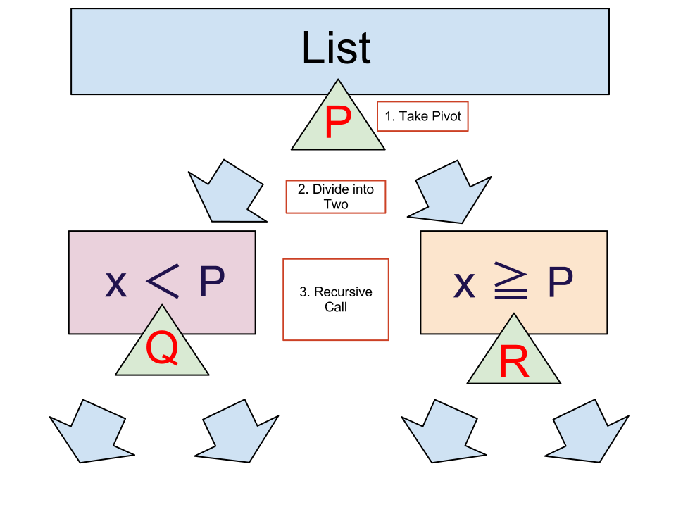

| date: | 2012/10/28 |
|---|
目次
リスト [3, 2, 5, 4, 1] の要素を並べ替えて、[1, 2, 3, 4, 5] にする手順を考えましょう。
できるだけ少ない手順で並び替え(ソート)を行いたいと思っています。 (あまり良く知らないので、配列をコピーする際のコストなどはあまり考えていません。)
まず、素朴な方法を考えます。
先頭から順番に隣の要素と比較して、大きい要素を後ろに持っていってみます。
[3, 2, 5, 4, 1] に対して、
ここまでで、最も大きい要素である、5 が最後尾に来ました。 同じようにして、もう1度同じ操作を行えば、4 が後ろから2番目に来ます。実際、
となります。 さらにもう1度同じ操作を行えば、3 が後ろから3番目になります。 このようにして、最終的に、[1, 2, 3, 4, 5] というリストを得ることができます。
このソートの方法をバブルソートというようです。
bubble_step :: (Ord a) => [a] -> [a]
bubble_step (x:[]) = x:[]
bubble_step (x:y:xs)
| x > y = y:bubble_step(x:xs)
| otherwise = x:bubble_step(y:xs)
bubble :: (Ord a) => [a] -> [a]
bubble xs = iterate bubble_step xs !! length xs
class Bubblesort < Array
def bubble
for j in 0...self.length-1
for i in 0...self.length-1
self[i], self[i+1] = self[i+1], self[i] if self[i] > self [i+1]
end
end
return self
end
end
この方法で、何回要素を比較しないといけないか考えてみます。 1つの要素を後ろに持っていくのに、上の a-d の4回必要でした。 今、要素は 1~5 の5つあるので、リストを並べ終えるまでに、 \(4\times5=20\) 回も要素を比較する必要があります。
もし、もっと大きなリストを考えていた場合、 サイズ N のリストに対して、 a-d に対応する操作は、 N-1 回必要で、 要素が N 個あるので、 \(N\times(N-1)\) 回も要素を比較しなければなりません。
(実際には、 \(\frac{N\times(N-1)}{2}\) くらいまで減らすことが可能です。)
次に、クイックソートと呼ばれるもう少し効率の良いソート方法を実装します。
クイックソートの戦略は次の通りです。
図にしてみるとこんな感じ。
ここでは、ピボットとしてリストの先頭要素を取る場合を考えてみます。
[3, 2, 5, 4, 1] に対して、
このようにして、3の左側(3より小さい要素全体)がソートされて、[1, 2]になり、3の右側(3以上の要素全体)がソートされて[4, 5]となります。
結果として、 [1, 2], [3], [4, 5] という3つのリストを合わせた、[1, 2, 3, 4, 5] というリストが得られます。
quicksort' :: Ord a => [a] -> [a]
quicksort' [] = []
quicksort' (x:xs) =
let smaller = filter (<x) xs
larger = filter (>=x) xs
in quicksort' smaller ++ [x] ++ quicksort' larger
class Sortable < Array
public
def quicksort
self.subquicksort.flatten.delete_if{|s| s == nil}
end
protected
def subquicksort
pivot = self.shift
left, right = Sortable.new([]), Sortable.new([])
self.each{|s|
if s < pivot
left.push(s)
else
right.push(s)
end
}
return [left.subquicksort, pivot, right.subquicksort] if left.size > 1 || right.size > 1
return [left, pivot, right]
end
end
上に書いた実装例で実行時間を測ってみました。
具体的には、 長さ10万, 各要素は1~100万の間というリストをランダムに生成して、上に書いた実装例で実行時間を計測しました。 クイックソートはこれを5回行い平均を取りましたが、バブルソートは時間がかかりすぎるので1度だけ行いました。
| バブルソート | クイックソート | ||
|---|---|---|---|
| Haskell | Ruby | Haskell | Ruby |
| 1202秒 | 2052秒 | 7.50ミリ秒 | 2.56秒 |
| バブルソート | クイックソート | ||
|---|---|---|---|
| Haskell | Ruby | Haskell | Ruby |
| 940秒 | 2043秒 | *1 | *2 |
{kind=link}
{kind=link}